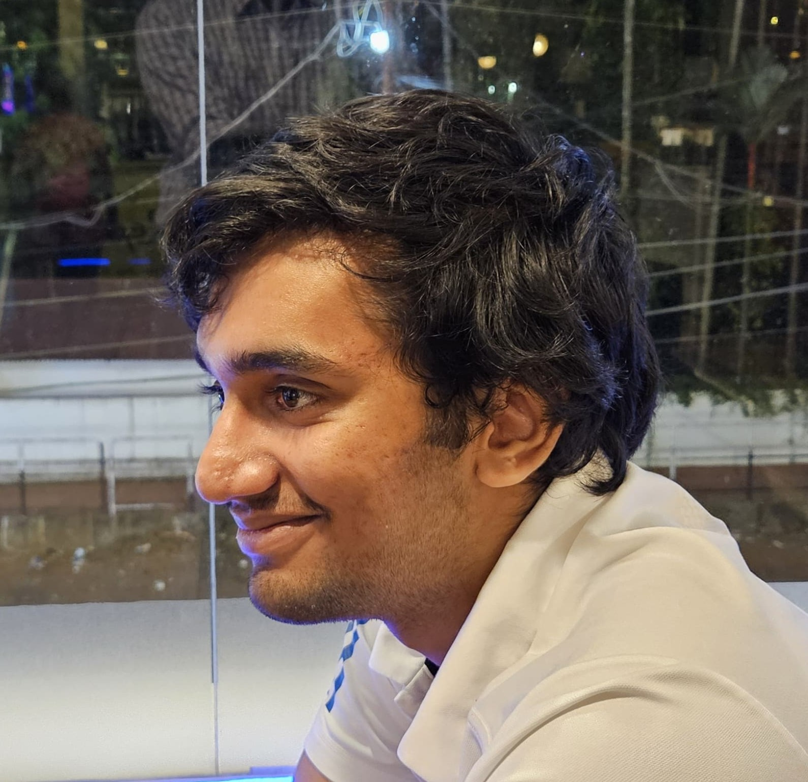

About me

I am an Aerospace Engineering student at IIT Kanpur, passionate about software development and machine learning, and actively looking for roles in the same.
Scholastic achievements:
- Secured All India Rank 8017 in JEE Advanced 2022 among the over 155k shortlisted candidates
- Secured rank 15839 among over 1 million applicants in JEE Mains 2022.
- Secured third position overall in the institution in the CBSE(X) exams.
Programming Languages and libraries:
Certifications
- Supervised Machine Learning, Coursera